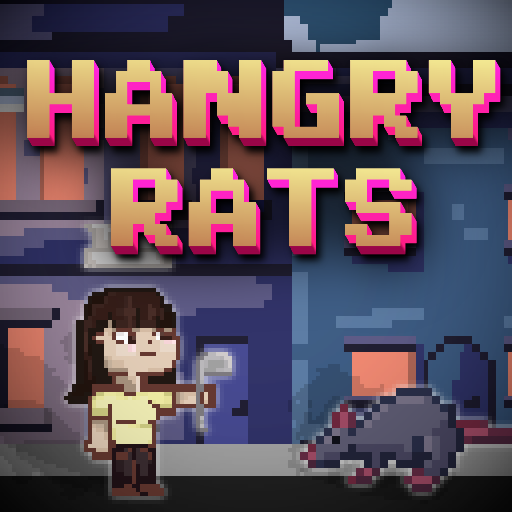
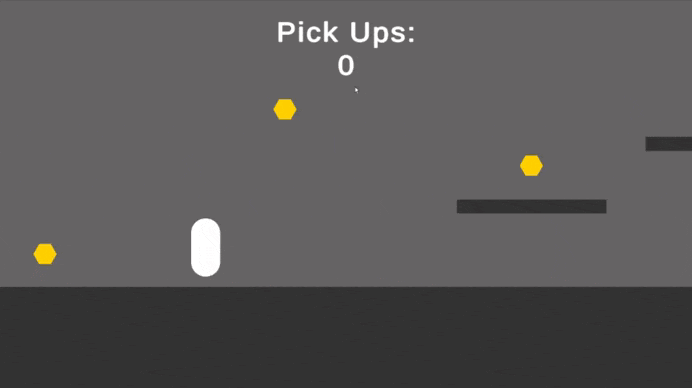
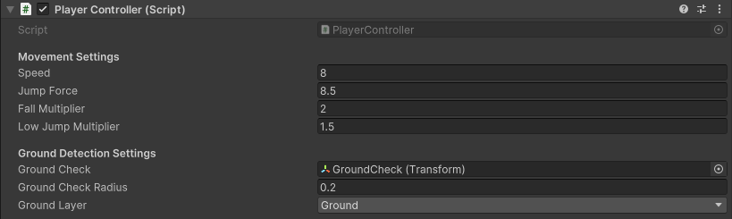

Hangry Rats - Group Game Project
Overview
2D Puzzle-Platformer
Date Started: 7th November 2024
My Role: Developer
Software Used: Unity, C#
Section 1 | Prototype
1.1 Introduction & Goal
This is a Group Game Project made in Year 1, Semester 1. You play as a chef with the goal of collecting as many ingredients as you can before the enemy rats take them. You can throw cheese to distract the rats and activate buttons.
The goal is to develop a functioning prototype of a game in 6 weeks. The brief was as follows:
"Working in teams, create a computer game concept, appropriately aimed at 11-15 year olds."
My role in this project was as Developer.
I worked in a team of 2 developers and 3 artists/designers. However we all concepted our project as a group.
1.2 Concept and Inspiration
As a team we initally came together and brainstormed ideas for our project, the only restriction in the brief was that it needs to be rated at or below PEGI 12.
We assessed the skills of everyone in the group, and first decided on what art style to produce. Due to the majority of the artists having proficiency in 2D art, we decided that the best option to prevent the risk of not being able to achieve the planned scope was to create a 2D game in a pixel art style.
Then, we worked to define what the concept of the game would be. We were comfortable with restricting ourselves to the art style, and we used Miro to organise our ideas and come up with the final concept of a puzzle platformer themed around cooking. Our first concepts involved the rat enemies being killable, perhaps with a similar mechanic to that of the goombas in Super Mario Bros.
However, we deemed animal cruelty as not fitting the brief, and instead decided on a fun and engaging puzzle-platformer game, where instead of being able to crush the rats, you instead can distract them, and you need to do this to activate buttons to progress.
We designed the concept of the game using a whiteboard, [1.2.1] and settled confidently on our project idea.
After spending time on this, as a team we quickly pulled together some reference art and developed what the setting for our game was going to be like:
We then developed my ideas into my final setting concept: various locations, beginning first in a small, artificially lit alleyway, and the game progresses into a brighter, more lively city centre as levels go on.
1.3 Tools and Software
Unity
Myself and Dan Ballem (the other developer on the project) were both already familiar with the 2D development tools in Unity, therefore, we decided it was best - and within scope - to develop the prototype for our game with such tools.
Miro
Miro is an online interactive whiteboard/note-taking app, used widely in industry and we chose to use it with this project, to gather ideas and inspiration in a manageable and shareable format, ideal for showing how and why we developed our ideas.
Aseprite & Libresprite
The artists used mainly Aseprite and Libresprite. These are both pixel art programs, Libresprite is a free fork of Aseprite, and they are intercompatible.
1.4 Programming
Before I began programming, I setup a new Unity project, installed all the necessary packages (e.g. 2D tools) and created a GitHub repository to use as our version control software.
My Responsibilities
As a team we had already planned out our weekly goals for the 6 weeks that this project will go on for, but we had to decide which tasks were whose responsibility as developers. We agreed that I was to develop the character controller, ingredient pickup system, button & door mechanics, the cheese throwing, and the main menu/UI. Dan Ballem took responsibility for the enemy AI, importing all the art assets, making them function, refining existing mechanics and scripts, and creating the levels.
Timeline Overview:
Week 1: Conceptualisation and Game Design Document
- Research, concept art
- Early plans for level layouts
Week 2: Initial prototype development (basic mechanics) & Art assets creation
- Character controller, character sprites, basic enemy AI, Ingredient pickup
Week 3: Refining mechanics & level layout planning/implementation
- Improving already existing mechanics
- Ingredient spawning + enemy spawning
- Buttons & Doors for puzzle element
- Creation of conceptualised levels
- Refining game loop
Week 4: Refining Prototype & Refining art
- Implementation of pause/menu screen & UI
- Win condition
- Continued design work on art and UI
Week 5: Feedback integration and polishing the prototype
- Continued refining of mechanics
- Fixing of critical bugs
- Get the game into a playable state
Week 6: Final presentation and individual reflections
- Character Controller -
The first thing I did to ensure that a functional prototype could be delivered in time was to create a demo scene, and develop the character controller. This was to allow for a minimum viable product to be created as fast as possible, by giving the other developer a premade scene to allow for easy implementation.
My first iteration of the character controller was extremely simple: [1.4.1]
private void FixedUpdate()
{
HandleMovement();
HandleJumping();
}
private void HandleMovement()
{
float horizontalInput = Input.GetAxis("Horizontal");
rb.velocity = new Vector2(horizontalInput * speed, rb.velocity.y);
}
private void HandleJumping()
{
if (Input.GetKeyDown(KeyCode.Space) || Input.GetKeyDown(KeyCode.UpArrow) && isGrounded)
{
rb.AddForce(new Vector2(0f, jumpForce), ForceMode2D.Impulse);
}
}
I then improved this by adding better feeling jumps, I was inspired by an approach that many platformers take, by allowing the player to make smaller, finer jumps when tapping jump, and larger jumps when holding it. I implemented this by adding extra downward force to the player when falling and reducing upward force when releasing the jump button early.
This creates snappier, more responsive and better-feeling jump mechanics by adjusting gravity dynamically.
AdjustGravity() runs in FixedUpdate() due to rigidbody physics calculations
private void AdjustGravity()
{
if (rb.velocity.y < 0)
{
rb.velocity += Vector2.up * Physics2D.gravity.y * (fallMultiplier - 1) * Time.fixedDeltaTime;
}
else if (rb.velocity.y > 0 && !Input.GetKeyDown(KeyCode.Space) && !Input.GetKeyDown(KeyCode.UpArrow))
{
rb.velocity += Vector2.up * Physics2D.gravity.y * (lowJumpMultiplier - 1) * Time.fixedDeltaTime;
}
}

1.4.1
To make this work, I created a prototype player object, which was a 2D capsule sprite, with a 2D box collider (to prevent falling off of corners). I gave this player the tag "Player" and put it on a new layer named "Player"
this is so that we could control what collisions do or do not interact with the player, and how the interactions function. The capsule was given a Rigidbody 2D component, a custom 'no friction' physics material, and the PlayerController.cs script.
Ground checking is performed by
isGrounded = Physics2D.OverlapCircle(groundCheck.position, groundCheckRadius, groundLayer);so I created a child empty named GroundCheck at the player's 'feet' and in the inspector, linked everything up [1.4.2]. I also put all 'ground' gameObjects into a new layer called Ground, to ensure the collisions only worked between the player and ground.
 1.4.2I turned this player into a prefab, to ensure that it can be used in multiple scenes, but all edits affect all instances of the player.
- Item Pickup -
Due to previous experience with a PowerUp Pickup system in my Top-Down 3D Shooter project, I was very confident with making a working ingredient pickup mechanic. Pickups are handled by PickUpController.cs, which serves as a manager for the pickup system using the Singleton pattern. It tracks the number of collectibles picked up, persists between scenes via DontDestroyOnLoad, and communicates with the UI system to display the current count. The Singleton implementation ensures only one instance exists, preventing duplicate tracking and maintaining consistent state across the game.
public static PickUpController Instance { get; private set; }
private void Awake()
{
if (Instance == null)
{
Instance = this;
DontDestroyOnLoad(gameObject);
}
else
{
Destroy(gameObject);
}
}
private void Start()
{
ResetPickups();
}
public void CollectPickup()
{
pickUpCount++;
UpdateUI();
}
To demo this, I made a SamplePickup prefab with tag "PickUp" on layer "PickUps". This object has a Circle Collider 2D component, with Is Trigger set to true.
In the Player's collision script, the CollectPickup() function is called if the player enters a trigger of object with tag "PickUp", increasing the count of pickups by 1, and updating UI.
Then, the other gameObject (in this case, the pickup) is destroyed.
It may have been better to simply disable the gameObject, however this is only a prototype, and for our current levels, there is never a need to re-enable a pickup.
Only the Player layer can collide with the PickUps layer, preventing any unintentional triggers.
This system is seen functioning in [1.4.1]
- Buttons & Doors -
Before beginning to write code, I planned out what would be necessary for the buttons and doors to work as we had planned.
I came to the conclusion that there needed to be a way to have multiple doors activated by one button, and multiple buttons to activate one door, allowing for much more
unique level design and creative puzzles.
I decided to implement this using a DoorManager singleton that maintains a Dictionary mapping button IDs to lists of doors. This allows:
- - Multiple doors to be registered to the same button ID
- - One door to respond to multiple buttons
- - Centralised control over door states through the DoorManager
- - Easy activation of all doors tied to a specific ID
public static DoorManager Instance { get; private set; }
private Dictionary> doorGroups = new Dictionary>();
private void Awake()
{
if (Instance == null)
{
Instance = this;
}
else
{
Destroy(gameObject);
}
}
public void RegisterDoor(DoorScript door, int doorID)
{
if (!doorGroups.ContainsKey(doorID))
{
doorGroups[doorID] = new List();
}
doorGroups[doorID].Add(door);
}
public void ActivateDoors(int buttonID, bool open)
{
if (doorGroups.ContainsKey(buttonID))
{
foreach (DoorScript door in doorGroups[buttonID])
{
door.SetDoorState(open);
}
}
}
This allowed me to create a button prefab with a collision handler script that, when is triggered by the player, executes
DoorManager.Instance.ActivateDoors(buttonID, false);This requires buttonID and doorID to be manually set when the prefabs are placed in the level. There is also a script on the door prefab which controls movement and has a serialised doorID field.
The door's movement is controlled programmatically.
private void Update()
{
Vector3 targetPosition = isOpen ? openPosition : closedPosition; // ? is if isOpen is true and : is if isOpen is false
transform.position = Vector3.Lerp(transform.position, targetPosition, Time.deltaTime * openSpeed);
}This can be seen functioning in [1.4.3]
 1.4.2
1.4.2
Reflection on Current Progress
Development of Hangry Rats is mostly keeping pace with the weekly schedule we had planned. As of week 4, we have successfully prototyped core mechanics, such as the player controller, pickup system, door/button mechanics, enemy AI, and I also developed a win condition (when a specific number of pickups
are collected, a door to the next level unlocks.
The things that still need implementing from weeks 3-4 include: spawning systems for ingredients and enemies, and the creation/design of more fun & thematic levels.
With core systems complete, we're on track to delivering a suitable prototype that fits the brief when the 6 weeks are over, and the remaining weeks will be focused on creating puzzles, UI, and improving the gameloop.
Limitations/Failures
As with all development projects, some things didn't go as planned, and are a valuable learning experience.
For example, development felt mostly disorganised, due to poor communication and lack of leadership. In future group projects, I think it would be valuable
to designate one person from each team (artists/developers) as the lead, and give them the role of managing everything and ensuring everything is organised, done on time, and that every system works together.
Using GitHub for version control hindered our progress from the beginning, as a lot of time was spent both setting it up and teaching everyone how to use it, however, progress speed quickly ramped up after we had all
gotten used to how it works. Perhaps in future projects, Unity's own Version Control System would be preferable.
A personal failure of mine is that I spent too long working on the concept of the game, instead of quickly diving into developing core mechanics that would definitely be usable in any scenario (e.g. a Character Controller).
This caused the other developer a small delay before he could begin proper progress on his enemy AI system, and offset us as a team from our timeline goals.
A lot of the systems I created do not work in every situation, due to a lack of polish. For example, if the Player & Rat stand on a button at the same time, when one of them steps off, the button thinks that it is deactivated.
I don't think this has a huge impact for a prototype, however it is still a notable limitation of my scripts.
I believe that this is fixable by tracking how many objects are on the button, and only deactivating it if the counter is zero, instead of on any OnTriggerExit2D event.
Based on these limitations I think the further 2/3 weeks of development time left will be enough to make everything functional as intended. I also think that a further 1-2 weeks on top of that would be necessary if we
want the game to have significant polish.
An area I would need to research is how to use normal maps on 2D sprites and how to effectively light a 2D scene in a 3D 'world', as the current game has a very 'flat' and uninspiring look to it, which I believe would
be greatly improved with more atmospheric lighting. Furthermore, I also need to research how to properly transition between animations on a sprite, for example between jumping, running, etc. This would make the game feel much more lively and fun.
Further Development
Following my reflection, I have outlined a weekly plan to ensure the project is fully playable before the 6 weeks are over:
Week 4 (cont.):
- Development & implementation of enemy & ingredient spawning
- Design and build levels using the core mechanics already built
- Build a functioning Main Menu & improved UI
- Bugfix
Week 5:
- Design a more appealing Main Menu & UI
- Refine Character & Enemy animations & transitions
- Implement normal maps where necessary
- Design and build levels using the core mechanics already built
- Bugfix
Week 6:
- Light & polish up levels
- Polish mechanics
- Playtest
- Bugfix
Key Tasks & Dependencies
Art: Must be completed before main menu & UI can be polished, before sprite animations can be finalised, and before lighting.
Button Fix: Must be completed before designing puzzles, as to not accidentally design something which is unplayable after the fix.
Audio Clips: Must be completed before implementation.
References
[1.2.2] Residential Area Tileset (2021). [Art]. Free Game Assets (GUI, Sprite, Tilesets). Retrieved from https://free-game-assets.itch.io/residential-area-tileset-pixel-art
[1.2.3] pixel city (animated) 2 (2018). [Art]. Lazur. Retrieved from https://openclipart.org/detail/310402/pixel-city-animated-2
[1.2.4] Pixel art street with buildings, stores, trees and sky with clouds (n.d.). [Art]. Chuckchee | Dreamstime.com. Retrieved from https://www.dreamstime.com/pixel-art-street-buildings-stores-trees-sky-clouds-image99878669